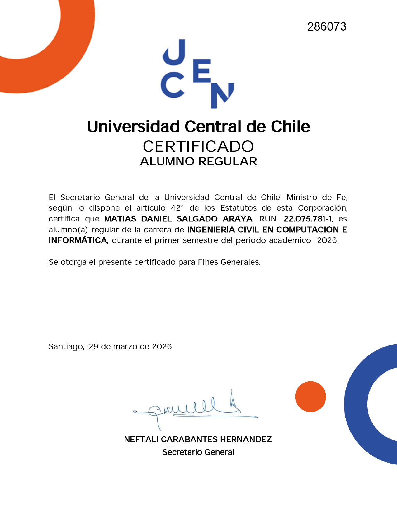
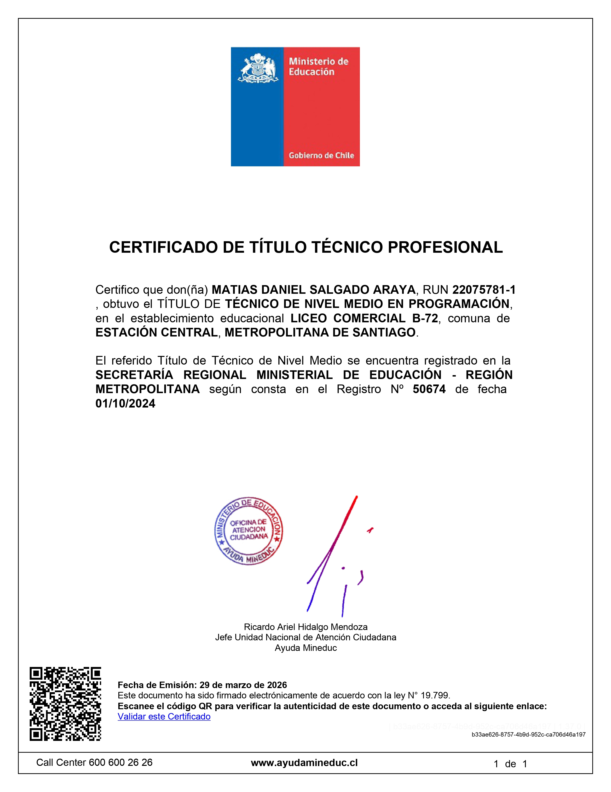
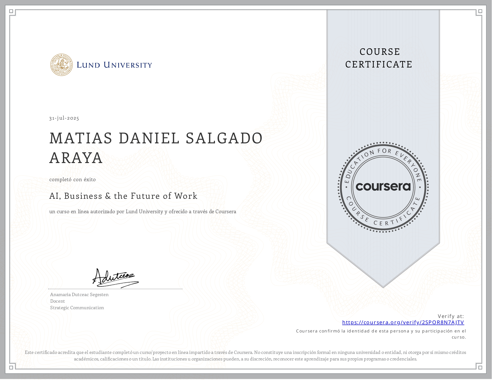

Soy una persona trabajadora y comprometida, con habilidades
en programación y resolución de problemas. Me destaco por mi
responsabilidad, capacidad de aprendizaje y trabajo en equipo,
buscando siempre mejorar y aportar valor en cada proyecto.



ExperienciaExperiencia en atención al cliente y apoyo administrativo, destacando en la gestión eficiente de requerimientos y resolución de problemas.
Participación en procesos de logística de bodegas, incluyendo control de inventario, organización de productos y apoyo en despacho, cumpliendo con estándares de orden y eficiencia.
Desarrollo de páginas web utilizando HTML, creando estructuras organizadas y funcionales, con enfoque en la experiencia del usuario y buenas prácticas de desarrollo web.